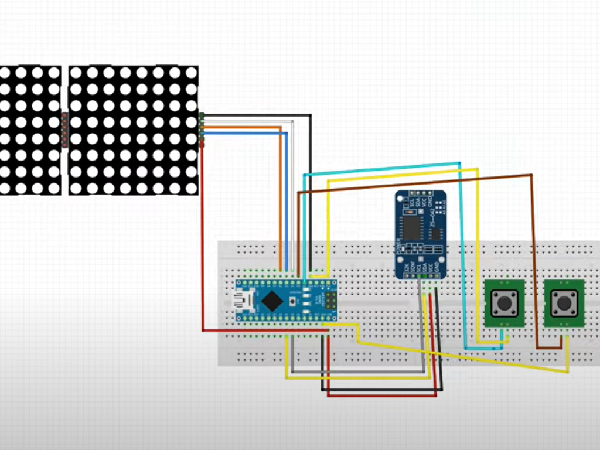

I will be documenting the process of making my final project here. The raw files can be found below as I go through what I have done and learned along the way.
I will be following the "Conceive, Design, Implement & Operate" (CDIO) Framework I learnt in my first year as a guideline for my project.
My lecturer suggested my class on two projects to embark on for our first main project; Digital Clock and Mood Lamp. I settled on Digital Clock because I personally believe its functions are more clear cut and practical as compared to the latter. As this main project required integration of all the skills we have learnt thus far, I decided to use a tutorial to guide me through this journey.
The designing phase starts with the casing for the Digital Clock so I went to Autodesk Fusion 360 and begin ideating some models out. I used the size of the 4 in 1 Dot LED Matrix as a datum point for the rest of the casing.
My first intial design had an openable back lid for easy access and had the buttons on the top so its easy to press. However there were a couple of flaws with the design.
1. With the buttons on the top and the casing having little to no internal reinforcement, if the button were pressed too hard it was susceptible to breaking like I had experienced myself.
2. Since the back lid was designed to be able to swing open, that would put stress on the DC wire that was connected to it and also meant I could not move the buttons to the back for the same reason as mentioned earlier.
With that, I had to shift my design philosphy and make a new design that could compomise.
I took a different approach with my second design to focus on function over form. With this new design, none of the pieces were designed to be swung open as that would reduce the structure integrity of the casing. The right piece was now designed in mind that it would just slide in place and that would also mean in the event that the 4 in 1 Dot LED Matrix ever needed to be replaced, it could easily be taken out and exchanged with a new LED board. Additionally, since I planned to use holders for the Arduino Nano and Real Time Clock module, they too can be easily replaced as well. The second design held up well after some real world testing and I was pretty satisfied with the design.
The next part was wiring up my circuit and get the display working. So with the help of the tutorial video, I wired up my Arduino, display and buttons as shown below.
Finally I needed to simulate the code to see if the Digital Clock works. I used the code I found from MOUNT DYNAMICS video and you can find it here.
Now comes the implement phase where I digitally fabricate my ideas to life with the help of 3D Printing and Laser Cutting.
I 3D printed a holder to hold the 4 in 1 Dot LED Matrix in place and to act as some from of internal structural reinforcement for the Digital Clock casing.
Settings I used for 3D Printing
Printer |
Ultimaker 2+ |
Material |
Black PLA |
Nozzle |
0.4mm |
Layer Height |
0.2mm |
Wall Thickness |
0.8mm (4x) |
Infill |
10% |
Print Speed |
80m/s |
Temperature |
190℃-205℃ |
Support |
Zig Zag |
Bed Adhesion |
Brim |
I then Laser Cut the casing for the Digital Clock assembly and glued the base, front piece, left piece and the 3D Printed holder together. This will now be the base structure I will work from.
Settings I used for Laser Cutting
Laser Cutter |
Epilog Laser Fusion Pro |
Material |
5.2mm Plywood |
Speed |
20 |
Power |
95 |
Frequency |
40 |
Cycle |
2 |
I invested a substaintial amount of time to solder the circuit together as I experienced many problems with the breadboard such as small vibration leading to a loose wire and other inconveniences. So as to improve the Digital Clock reliability and improve its circuit connection (afterall, it is designed to be connected to power and used 24/7), I soldered all the components to a breadboard.
You can find all my RAW files here:
After uploading the code and checking that the Digital Clock was working as intended, I finished up by gluing together the back and top piece with the rest of the assembly.
Lastly, I connected the Digital Clock to power and left it running for a few days to see if it could operate properly on normal loads. Glad to say that it held up as expected and my project was finally completed. I have learned a lot of great skills and picked up experience through this first main project of mine and I am looking forward to future projects.